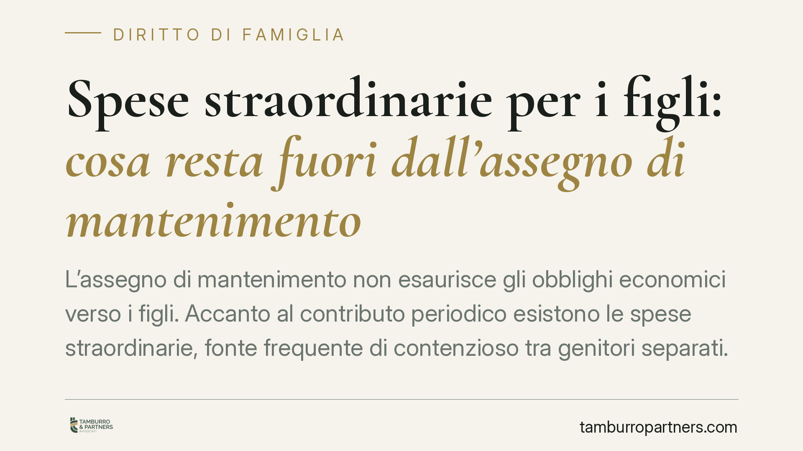

Spese straordinarie per i figli: cosa resta fuori dall'assegno di mantenimento
L'assegno di mantenimento non esaurisce gli obblighi economici verso i figli. Accanto al contributo periodico esistono le spese straordinarie, fonte frequente di contenzioso tra genitori separati. Capire quali costi rientrano nell'assegno e quali vanno ripartiti a parte è essenziale per evitare richieste di rimborso contestate e nuovi procedimenti.

Il quadro normativo
L'obbligo di mantenimento dei figli trova il suo fondamento nell'art. 337-ter del codice civile, che impone a ciascun genitore di contribuire in misura proporzionale al proprio reddito. La norma distingue, almeno sul piano applicativo, tra le spese ordinarie — assorbite dall'assegno periodico — e le spese straordinarie, che per la loro natura imprevedibile o non ricorrente restano fuori dalla quantificazione dell'assegno e vanno ripartite separatamente.
Le spese ordinarie comprendono i costi fissi e prevedibili della vita quotidiana: vitto, abbigliamento ordinario, materiale scolastico di base, spese per lo svago abituale. L'assegno le copre per definizione. Le spese straordinarie riguardano invece esborsi non ricorrenti, significativi o imprevedibili: interventi sanitari non coperti dal servizio pubblico, cure ortodontiche, viaggi di studio, tasse universitarie, attività sportive agonistiche.
Il rito unificato in materia di persone, minorenni e famiglia, introdotto dalla riforma Cartabia (D.Lgs. 149/2022, artt. 473-bis e seguenti c.p.c.), ha rafforzato l'esigenza che i provvedimenti sul contributo economico individuino con chiarezza criteri e modalità di ripartizione delle spese non ricorrenti, proprio per ridurre il contenzioso successivo.
I protocolli dei tribunali
In assenza di un elenco normativo tassativo, i tribunali hanno adottato protocolli che classificano le spese straordinarie e ne disciplinano la ripartizione. Due riferimenti sono particolarmente diffusi.
Il Tribunale di Milano distingue tra spese straordinarie da sostenere senza necessità di previo accordo — perché urgenti, necessarie o rientranti in categorie già individuate (visite specialistiche prescritte, libri scolastici, cure ortodontiche) — e spese che richiedono invece il consenso preventivo dell'altro genitore, in quanto discrezionali o voluttuarie (attività extra non concordate, viaggi non essenziali).
Il Tribunale di Roma segue un'impostazione analoga, ma con una propria elencazione e proprie soglie. La conseguenza pratica è rilevante: a seconda del foro competente, la stessa spesa può essere qualificata diversamente e, con essa, il diritto al rimborso.
Gli orientamenti della Cassazione
Sul tema la giurisprudenza di legittimità si è consolidata attorno a tre principi.
Il primo riguarda il consenso: per le spese straordinarie non urgenti e non necessarie, il genitore che le sostiene senza interpellare l'altro rischia di vedersi negato il rimborso, salvo che la spesa risponda comunque a un interesse oggettivo del figlio.
Il secondo attiene a urgenza e necessità: quando la spesa è indifferibile o imposta dalle esigenze del minore, il consenso preventivo non è richiesto e il rimborso è dovuto.
Il terzo è l'onere probatorio: chi chiede il rimborso deve documentare la spesa e la sua natura. Si tratta di orientamenti consolidati nelle pronunce della Corte di Cassazione in materia di mantenimento dei figli; per i casi concreti è opportuno verificare gli estremi delle sentenze più recenti, data l'evoluzione della materia.
Implicazioni pratiche
Per il genitore collocatario, la lezione è chiara: non ogni esborso sostenuto dà automaticamente diritto a metà del rimborso. Per il genitore non collocatario, altrettanto: non ogni richiesta può essere rifiutata, specie di fronte a spese necessarie e documentate.
La distinzione tra spesa con o senza consenso preventivo diventa quindi il vero spartiacque del contenzioso. Un provvedimento che richiami espressamente un protocollo riduce il margine di conflitto; la sua assenza lo amplifica.
Cosa fare in concreto
- Verificare nel provvedimento di separazione o divorzio quale protocollo (Milano, Roma o altro foro) sia stato richiamato e come classifichi le spese.
- Richiedere per iscritto il consenso dell'altro genitore prima di sostenere spese discrezionali o voluttuarie, conservando la risposta o il silenzio.
- Conservare fatture, ricevute e prescrizioni mediche, che costituiscono la prova della natura e dell'entità della spesa.
- Documentare l'urgenza o la necessità quando si procede senza consenso preventivo, per sostenere l'eventuale richiesta di rimborso.
- In caso di dubbi sulla natura della spesa è opportuna una valutazione tecnica preventiva, prima di avviare o resistere a una richiesta di rimborso.
Disclaimer
Contributo informativo a cura di Tamburro & Partners Avvocati. Non costituisce parere legale.
Ogni famiglia ha il suo equilibrio.
Separazione, divorzio, affidamento, assegno: se vuoi un confronto riservato su una specifica situazione, scrivi allo studio. Ti rispondiamo entro un giorno lavorativo.